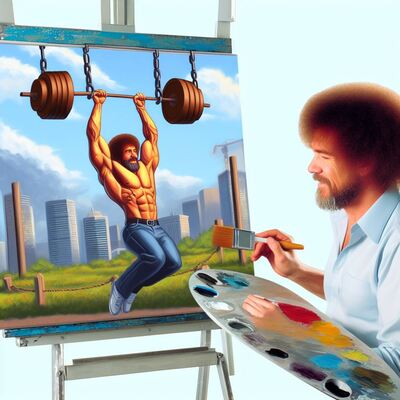
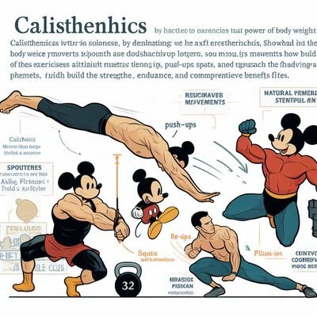
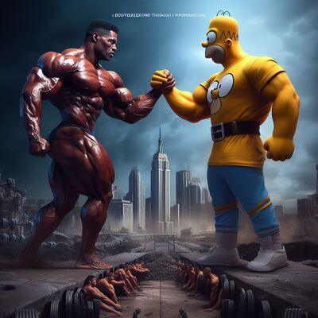
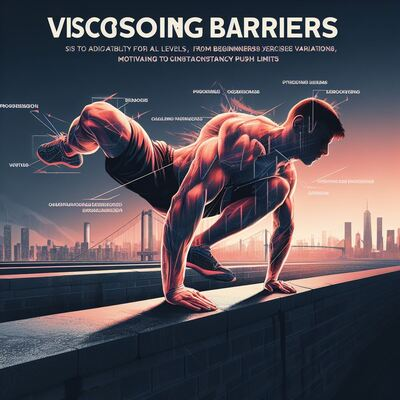
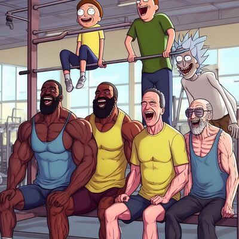
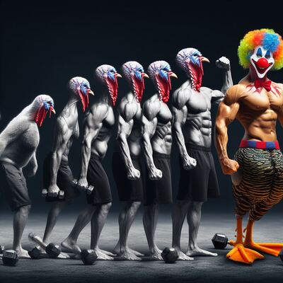

Descubre la Transformación con Calistenia: El Arte del Cuerpo sin Pesas
Publicado:
Introducción a la calistenia
La calistenia, un enfoque de entrenamiento que utiliza el peso corporal como única resistencia, ha ganado popularidad en el mundo del fitness gracias a su capacidad para esculpir cuerpos fuertes y ágiles sin la necesidad de equipos costosos. En este arte de la resistencia corporal, la simplicidad se encuentra con la efectividad, permitiendo a los entusiastas del fitness esculpir sus cuerpos de manera sencilla pero poderosa.
El Poder del Peso Corporal
La calistenia se basa en movimientos naturales como flexiones, dominadas, y sentadillas, aprovechando el peso del propio cuerpo para construir fuerza y resistencia. Estos ejercicios no solo desarrollan músculos, sino que también mejoran la coordinación, flexibilidad y estabilidad, proporcionando beneficios integrales para el cuerpo.
Uniendo Fuerzas: Fisicoculturismo y Calistenia
En un mundo donde los estilos de entrenamiento a menudo se perciben como opuestos, la realidad es que el fisicoculturismo y la calistenia pueden coexistir de manera armoniosa, incluso en medio de la adversidad. Imagina una escena donde la imponente figura de Ronnie Coleman, representando el fisicoculturismo, se entrelaza con la figura realista y cómica de Homero Simpson, un devoto de la calistenia. Esta representación visual no solo desafía las percepciones convencionales, sino que también resalta cómo estas dos disciplinas pueden ser aliadas en la búsqueda de la superación personal y la salud física.
Superando Barreras con Progresiones
La calistenia se adapta a todos los niveles de condición física gracias a sus progresiones. Desde principiantes hasta expertos, cada persona puede encontrar variaciones de ejercicios que desafíen sus habilidades actuales y les permitan avanzar gradualmente. Este enfoque progresivo no solo previene lesiones, sino que también motiva a los practicantes a superar constantemente sus límites.
Comunidad y Motivación
La calistenia ha generado una comunidad apasionada y solidaria en todo el mundo. A través de plataformas en línea y grupos locales, los entusiastas comparten experiencias, rutinas y logros, creando un ambiente motivador. Esta conexión entre personas con objetivos similares contribuye significativamente a la perseverancia y el éxito a largo plazo en el camino de la calistenia.
Más que un Entrenamiento, un Estilo de Vida
Más allá de ser simplemente un método de entrenamiento, la calistenia se convierte en un estilo de vida. Fomenta la disciplina, la autodisciplina y la autoconfianza al tiempo que nutre el respeto por el propio cuerpo. Descubrir la calistenia no solo es abrir la puerta a un cuerpo más fuerte, es adentrarse en un viaje de autodescubrimiento y superación personal.
